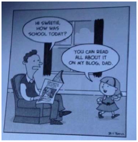

第 1 题 #
1. Why did Hartwick College start three-year degree programs?
大学英语六级 · questions · 2012
题号和章节目录由结构化数据生成。选项按卷面字母顺序显示；原标记保留在 JSON 中。
全国英语六级历年真题
2012 年6 月大学英语六级(CET-6)真题试卷
注意：此部分试题在答题卡1 上。 Directions: For this part, you are allowed 30 minutes to write a composition on the topic The Impact of the Internet on Interpersonal Communication. You should write at least 150 words but no more than 200 words.

Directions: In this part, you will have 15 minutes to go over the passage quickly and answer the questions on Answer Sheet 1. For questions 1-7, choose the best answer from the four
1 / 39
全国英语六级历年真题
choices marked A), B), C) and D). For questions 8-10, complete the seen tenses with the information given in the passage.
Hartwick College, a small liberal-arts school in upstate New York, makes New York, makes this offer to well prepared students: earn your undergraduate degree in three years instead of four, and save about 543,000—the amount of one year’s tuition and fees. A number of innovative colleges are making the same offer to students anxious about saving time and money. That’s both an opportunity and a warning for the best higher-education system in the world.
The United States has almost all of the world’s best universities. A recent Chinese survey ranks 35 American universities among the top 50, eight among the top 10. Our research universities have been the key to developing the competitive advantages that help Americans produce 25% of all the world’s wealth. In 2007, 623,805 of the world’s brightest students were attracted to American universities.
Yet, there are signs of peril (危险)within American higher education. U.S. colleges have to compete in the marketplace. Students may choose among 6,000 public, private, nonprofit, for profit, or religious institutions of higher learning. In addition, almost all of the 532 billion the federal government provides for university research is awarded competitively.
But many colleges and universities are stuck in the past. For instance, the idea of the fall-to-spring“school year”hasn’t changed much since before the American Revolution, when we were a summer stretch no longer makes sense. Former George Washington University president Stephen Trachtenberg estimates that a typical college uses its facilities for academic purposes a little more than half the calendar year.“While college facilities sit idle, they continue to generate maintenance expenses that contribute to the high cost of running a college,” he has written.
Within academic departments, tenure(终身职位)，combined with age-discrimination laws, makes faculty turnover—critical for a university to remain current in changing times—difficult. Instead of protecting speech and encouraging diversity and innovative thinking, the tenure system often stifles(压制)them: younger professors must win the approval of established colleagues for tenure, encouraging like-mindedness and sometimes inhibiting the free flow of ideas.
Meanwhile, tuition has soared, leaving graduating students with unprecedented loan debt. Strong campus presidents to manage these problems are becoming harder to find, and to keep. In
2 / 39
全国英语六级历年真题
fact, students now stay on campus almost as long as their presidents. The average amount of time students now take to complete an undergraduate degree has stretched to six years and seven months as students interrupted by work, inconvenienced by unavailable classes, or lured by one more football season find it hard to graduate.
Congress has tried to help students with college costs through Pell Grants and other forms of tuition support. But some of their fixes have made the problem worse. The stack of congressional regulations governing federal student grants and loans now stands twice as tall as I do. Filling out these forms consumes 7% of every tuition dollar.
For all of these reasons, some colleges like Hartwick are rethinking the old way of doing things and questioning decades-old assumptions about what a college degree means. For instance, why does it have to take four years to earn a diploma? This fall, 16 first-year students and four second-year students at Hartwick enrolled in the school’s new three year degree program. According to the college, the plan is designed for high-ability, highly motivated student who wish to save money or to move along more rapidly toward advanced degrees.
By eliminating that extra year, there year degree students save 25% in costs. Instead of taking 30 credits a year, these students take 40. During January, Hartwick runs a four week course during which students may earn three to four credits on or off campus, including a number of international sites. Summer courses are not required, but a student may enroll in them—and pay extra. Three year students get first crack at course registration. There are no changes in the number of courses professors teach or in their pay.
The three-year degree isn’t a new idea. Geniuses have always breezed through. Judson College, a 350-student institution in Alabama, has offered students a three-year option for 40 years. Students attend “short terms” in May and June to earn the credits required for graduation. Bates College in Maine and Ball State University in Indiana are among other colleges offering three-year options.
Changes at the high-school level are also helping to make it easier for many students to earn their undergraduate degrees in less time. One of five students arrives at college today with Advanced Placement (AP) credits amounting to a semester or more of college level work. Many universities, including large schools like the University of Texas, make it easy for these AP students to graduate faster.
3 / 39
全国英语六级历年真题
For students who don’t plan to stop with an undergraduate degree, the three-year plan may have an even greater appeal. Dr. John Sergent, head of Vanderbilt University Medical School’s residency (住院医生) program, enrolled in Vanderbilt’s undergraduate college in 1959. He entered medical school after only three years as did four or five of his classmates.” My first year of medical school counted as my senior year, which meant I had to take three to four labs a week to get all my sciences in. I basically skipped my senior year,” says Sergent. He still had time to be a student senator and meet his wife.
There are, however, drawbacks to moving through school at such a brisk pace. For one, it deprives students of the luxury of time to roam (遨游) intellectually. Compressing everything into three years also leaves less time for growing up, engaging in extracurricular activities, and studying abroad. On crowded campuses it could mean fewer opportunities to get into a prized professor’s class. Iowa’s Waldorf College has graduated several hundred students in its three-year degree program, but it now phasing out the option. Most Waldorf students wanted the full four-year experience—academically, socially, and athletically. And faculty members will be wary of any change that threatens the core curriculum in the name of moving students into the workforce.
“Most high governmental officials seem to conceive of education in this light—as a way to ensure economic competitiveness and continued economic growth,” Derek Bok, former president of Harvard, told The Washington Post. “I strongly disagree with this approach.” Another risk: the new campus schedules might eventually produce less revenue for the institution and longer working hours for faculty members.
Adopting a three-year option will not come easily to most school. Those that wish to tackle tradition and make American campus more cost-conscious may find it easier to take Trachtenberg’s advice: open campuses year-round.“You could run two complete colleges, with two complete faculties,”he says.“That’s without cutting the length of students’ vacations, increasing class sizes, or requiring faculty to teach more.”
Whether they experiment with three-year degrees, offer year-round classes, challenge the tenure system—or all of the above—universities are slowly realizing that to stay competitive and relevant they must adapt to a rapidly changing world.
Expanding the three-year option may be difficult, but it may be less difficult than asking Congress for additional financial help, asking legislators for more state support, or asking students 4 / 39
全国英语六级历年真题
even higher tuition payments. Campuses willing to adopt convenient schedules along with more focused, less-expensive degrees may find that they have a competitive advantage in attracting bright, motivated students. These sorts of innovations can help American universities avoid the perils of success.
注意：此部分试题请在答题卡1 上作答。
1. Why did Hartwick College start three-year degree programs?
2. By quoting Stephen Trachtenberg the author wants to say that .
3. The author thinks the tenure system in American universities .
4. What is said about the new three-year degree program at Hartwick?
5. What do we learn about Judson College’s three-year degree program?
6. What changes in high schools help students earn undergraduate degrees in three years?
5 / 39
全国英语六级历年真题
7. What is said to be a drawback of the three-year college program?
8. College faculty members are afraid that the pretext of moving students into the workforce might pose a threat to .
9. Universities are increasingly aware that they must adapt to a rapidly changing world in order to .
10. Convenient academic schedules with more-focused, less-expensive degrees will be more attractive to .
Directions: In this section, you will hear 8 short conversations and 2 long conversations. At the end of each conversation, one or more questions will be asked about what was said. Both the conversation and the questions will be spoken only once. After each question there will be a pause. During the pause, you must read the four choices marked A), B) ,C) and D), and decide which is the best answer. Then mark the corresponding letter on Answer Sheet 2 with a single line through the centre.
注意:此部分试题请在答题卡2 上作答.
11.
12.
6 / 39
全国英语六级历年真题
13.
14.
15.
16.
17.
18.
Questions 19 to 21 are based on the conversation you have just heard.
19.
7 / 39
全国英语六级历年真题
20.
21.
Questions 22 to 25 are based on the conversation you have just heard.
23.
24.
Directions: In this section, you will hear 3 short passages. At the end of each passage, you will hear some questions. Both the passage and the questions will be spoken only once. After you hear a question, you must choose the best answer from the four choices marked A), B), C) and D). Then 8 / 39
全国英语六级历年真题
mark the corresponding letter on Answer Sheet 2 with a single line through the center.
Questions 26 to 29 are based on the passage you have just heard.
26.
27.
28.
29.
Questions 30 to 32 are based on the passage you have just heard.
30.
31.
9 / 39
全国英语六级历年真题
32.
Questions 33 to 35 are based on the passage you have just heard.
33.
34.
35.
Directions: In this section, you will hear a passage three times. When the passage is read for the first time, you should listen carefully for its general idea. When the passage is read for the second time, you are required to fill in the blanks numbered from 36 to 43 with the exact words you have just heard. For blanks numbered 44 to 46 you are required to fill in the missing information. For these blanks, you can either use the exact words you have just heard or write down the main points in your own words. Finally, when the passage is read for the third time, you should check what you have written.
注意：此部分的试题请在答题卡2 上作答。
About 700,000 children in Mexico dropped out of school last year as recession-stricken families pushed kids to work, and a weak economic recovery will allow only a 10 / 39
全国英语六级历年真题
(36)_________improvement in the drop-out rate in 2010, a top education (37) _________said.
Mexico’s economy suffered more than any other in Latin America last year, (38) _________an estimated 7 percent due to a (39) _________in U.S. demand for Mexican exports such as cars.
The (40) _________led to a 4 percent increase in the number of kids who left (41) _________or middle school in 2009, said Juan de Dios Castro, who (42) _________the nation’s adult education program and keeps a close watch on drop-out rates.
“(43) _________rose and that is a factor that makes our job more difficult.” Castro told Reuters in an interview earlier this month.
(44)____________________________________________________________________________ _______________________.As a result, drop-out rates will not improve much, Castro said. “There will be some improvement, but not significant,” Castro said.
(45)____________________________________________________________________________ _______________________. And children often sell candy and crafts in the streets or word in restaurants.
(46)____________________________________________________________________________ _______________________. Mexico’s politicians have resisted mending the country’s tax, energy and labor laws for decades, leaving its economy behind countries such as Brazil and Chile.
Directions: In this section, there is a short passage with 5 questions or incomplete statements. Read the passage carefully. Then answer the questions or complete the statements in the fewest possible words. Please write your answers on Answer Sheet 2
Questions 47 to 51 are based on the following passage.
In face of global warming, much effort has been focused on reducing greenhouse gas emissions through a variety of strategies. But while much of the research and innovation has
11 / 39
全国英语六级历年真题
concentrated on finding less-polluting energy alternatives, it may be decades before clean technologies like wind and solar meet a significant portion of our energy needs.
In the meantime, the amount of CO2 in the air is rapidly approaching the limits proposed by the Intergovernmental Panel on Climate Change (IPCC). “As long as we’re consuming fossil fuels, we’re putting out CO2,”says Klaus Lackner, a geophysicist at Columbia, University” We cannot let the CO2 in the atmosphere rise indefinitely.”
That sense of urgency has increased interest in capturing and storing CO2, which the IPCC says could provide the more than 50% reduction in emissions thought needed to reduce global warming.“We see the potential for capture and storage to play an integral role in reducing emissions,” says Kim Corley, Shell’s senior advisor of CO2 and environmental affairs. That forward thinking strategy is gaining support. The U.S. Department of Energy recently proposed putting $1 billion into a new $2.4 billion coal-burning energy plant. The plant’s carbon-capture technologies would serve as a pilot project for other new coal-burning plants.
But what do you do with the gas once you’ve captured it? One option is to put it to new uses. Dakota Gasification of North Dakota captures CO2 at a plant that converts coal into synthetic natural gas. It then ships the gas 200 miles by pipeline to Canada, where it is pumped underground in oil recovery operations. In the Netherlands, Shell delivers CO2 to farmers who pipe it into their greenhouses, increasing their yield of fruits and vegetables.
However, scientists say that the scale of CO2 emissions will require vast amounts of long-term storage. Some propose storing the CO2 in coal mines or liquid storage in the ocean, Shell favors storing CO2 in deep geological structures such as saline(盐的) formations and exhausted oil and gas fields that exist throughout the world.
注意：此部分试题请在答题卡2 上作答。
47. What are suggested as renewable and less-polluting energy alternatives?
48. What does the author say is a forward thinking strategy concerning the reduction of CO2 emissions?
49. One way of handing the captured CO2 as suggested by the author is to store it and .
50. Through using CO2, Dutch farmers have been able to .
51. Long-term storage of CO2 is no easy job because of .
12 / 39
全国英语六级历年真题
Directions: There are 2 passages in this section. Each passage is followed by some questions or unfinished statements. For each of them there are four choices marked A), B), C) and D). You should decide on the best choice and mark the corresponding letter on Answer sheet 2 with a single line through the centre.
Questions 52 to 56 are based on the following passage.
As anyone who has tried to lose weight knows, realistic goal-setting generally produces the best results. That's partially because it appears people who set realistic goals actually work more efficiently, and exert more effort, to achieve those goals.
What's far less understood by scientists, however, are the potentially harmful effects of goal-setting.
Newspapers relay daily accounts of goal-setting prevalent in industries and businesses up and down both Wall Street and Main Street , yet there has been surprisingly little research on how the long-trumpeted practice of setting goals may have contributed to the current economic crisis , and unethical (不道德的)behavior in general.
“Goals are widely used and promoted as having really beneficial effects. And yet, the same motivation that can push people to exert more effort in a constructive way could also motivate people to be more likely to engage in unethical behaviors,” says Maurice Schweitzer, an associate professor at Penn’s Wharton School.
“It turns out there’s no economic benefit to just having a goal---you just get a psychological benefit” Schweitzer says. “But in many cases, goals have economic rewards that make them more powerful.”
A prime example Schweitzer and his colleagues cite is the 2004 collapse of energy-trading giant Enron, where managers used financial incentives to motivate salesmen to meet specific revenue goals. The problem, Schweitzer says, is the actual trades were not profitable.
Other studies have shown that saddling employees with unrealistic goals can compel them to lie, cheat or steal. Such was the case in the early 1990s when Sears imposed a sales quota on its auto repair staff. It prompted employees to overcharge for work and to complete unnecessary repairs on a companywide basis. 13 / 39
全国英语六级历年真题
Schweitzer concedes his research runs counter to a very large body of literature that commends the many benefits of goal-setting. Advocates of the practice have taken issue with his team’s use of such evidence as news accounts to support his conclusion that goal-setting is widely over-prescribed
In a rebuttal ( 反驳) paper, Dr. Edwin Locke writes:“Goal-setting is not going away. Organizations cannot thrive without being focused on their desired end results any more than an individual can thrive without goals to provide a sense of purpose.”
But Schweitzer contends the “mounting causal evidence” linking goal-setting and harmful behavior should be studied to help spotlight issues that merit caution and further investigation. “Even a few negative effects could be so large that they outweigh many positive effects,” he says.
“Goal-setting does help coordinate and motivate people. My idea would be to combine that with careful oversight, a strong organizational culture, and make sure the goals that you use are going to be constructive and not significantly harm the organization,” Schweitzer says.
注意：此部分试题请在答题卡2 上作答。
52. What message does the author try to convey about goal-setting?
53. What does Maurice Schweitzer want to show by citing the example of Enron?
54. How did Sears’ goal-setting affect its employees?
14 / 39
全国英语六级历年真题
55. What do advocates of goal-setting think of Schweitzer’s research?
56. What is Schweitzer’s contention against Edwin Locke?
Questions 57 to 61 are based on the following passage.
For most of the 20th century, Asia asked itself what it could learn from the modern, innovating West. Now the question must be reversed. What can the West’s overly indebted and sluggish (经济滞长的) nations learn from a flourishing Asia?
Just a few decades ago, Asia’s two giants were stagnating(停滞不前) under faulty economic ideologies. However, once China began embracing free-market reforms in the 1980s, followed by India in the 1990s, both countries achieved rapid growth. Crucially, as they opened up their markets, they balanced market economy with sensible government direction. As the Indian economist Amartya Sen has wisely said, “The invisible hand of the market has often relied heavily on the visible hand of government.”
Contrast this middle path with America and Europe, which have each gone ideologically over-board in their own ways. Since the 1980s, America has been increasingly clinging to the ideology of uncontrolled free markets and dismissing the role of government---following Ronald Regan’s idea that “government is not the solution to our problem; government is the problem. “Of course, when the markets came crashing down in 2007, it was decisive government intervention that saved the day. Despite this fact, many Americans are still strongly opposed to “big government.”
If Americans could only free themselves from their antigovernment doctrine, they would begin to see that the America’s problems are not insoluble. A few sensible federal measures could put the country back on the right path. A simple consumption tax of, say, 5% would significantly reduce the 15 / 39
全国英语六级历年真题
country’s huge government deficit without damaging productivity. A small gasoline tax would help free America from its dependence on oil imports and create incentives for green energy development. In the same way, a significant reduction of wasteful agricultural subsidies could also lower the deficit. But in order to take advantage of these common-sense solutions, Americans will have to put aside their own attachment to the idea of smaller government and less regulation. American politicians will have to develop the courage to follow what is taught in all American public-policy schools: that there are good taxes and bad taxes. Asian countries have embraced this wisdom, and have built sound long-term fiscal (财政的) policies as a result.
Meanwhile, Europe has fallen prey to a different ideological trap: the belief that European governments would always have infinite resources and could continue borrowing as if there were no tomorrow. Unlike the Americans, who felt that the markets knew best, the Europeans failed to anticipate how the markets would react to their endless borrowing. Today, the European Union is creating a $580 billion fund to ward off sovereign collapse. This will buy the EU time, but it will not solve the bloc’s larger problem.
57. What has contributed to the rapid economic growth in China and India?
58. What does Ronald Reagan mean by saying “government is the problem” (line4, Para. 3)?
59. What stopped the American economy from collapsing in 2007?
60. What is the author’s suggestion to the American public in face of the public government
16 / 39
全国英语六级历年真题
deficit?
61. What’s the problem with the European Union?
Directions: There are 20 blanks in the following passage. For each blank there are four choices marked A)，B)，C)and D)on the right side of paper. You should choose the ONE that best fits into the passage. Then mark the corresponding letter on Answer Sheet 2 with a single line through the centre.
注意：此部分试题请在答题卡2 上作答.
Music produces profound and lasting changes in the brain. Schools should add music classes, not cut them. Nearly 20 years ago, a small study advanced the 62 that listening to Mozart’s Sonata for Two Pianos in D Major could boost mental functioning. It was not long 63 trademarked “Mozart effect” products began to appeal to anxious parents aiming to put toddlers (刚学步的孩子) 64 the fast track to prestigious universities like Harvard and Yale. Georgia’s governor even 65 giving every newborn there a classical CD or cassette.
The 66 for Mozart therapy turned out to be weak, perhaps nonexistent, although the 67 study never claimed anything more than a temporary and limited effect. In recent years, 68 , scientists have examined the benefits of a concerted 69 to study and practice music, as 70 to playing a Mozart CD or a computer-based“brain fitness” game 71 in a while.
Advanced monitoring 72 have enabled scientists to see what happens 73 your head when you listen to your mother and actually practice the violin for an hour every afternoon. And they have
17 / 39
全国英语六级历年真题
found that music 74 can produce profound and lasting changes that 75 the general ability to learn. These results should 76 public officials that music classes are not a mere decoration, ripe for discarding in the budget crises that constantly 77 public schools.
Studies have shown that 78 instrument training from an early age can help the brain to 79 sounds better, making it easier to stay focused when absorbing other subjects, from literature to mathematics. The musically adept (擅长的)are better able to 80 on a biology lesson despite the noise in the classroom 81 , a few years later, to finish a call with a client when a colleague in the next office starts screaming a subordinate. They can attend to several things at once in the mental scratch pad called working memory, an essential skill in this era of multitasking.
18 / 39
全国英语六级历年真题
Part Ⅵ Translation (5 minutes)
Directions: Complete the sentences by translating into English the Chinese given in brackets. Please write your translation on Answer Sheet 2.
注意：此部分试题请在答题卡2 上作答，只需写出译文部分。
82. I think that the meal is well ______________________(没有折扣的情况下值80 美元).
83. ______________________ ( 面对来自其他公司的激烈竞争), the automobile manufacturer is considering launching a promotion campaign.
84. As far as hobbies are concerned, Jane and her sister ______________________ (几乎没有
什么共同之处).
85. Only after many failures______________________ (我才认识到仅凭运气是不能成功
的).
86. But for the survival instinct which nearly all creatures have, ______________________
(更多的物种就可能已经在地球上灭绝了).
19 / 39
全国英语六级历年真题
2012 年6 月大学英语六级(CET-6)参考答案
Directions: For this part, you are allowed 30 minutes to write a short essay entitled The Impact of the Internet on Interpersonal Communication. Your essay should start with a brief description of the picture. You should write at least 150 words but no more than 200 words.
作文标准版
The Impact of the Internet on Interpersonal Communication
As is described in the picture, a father asks her daughter how her school today goes on. Instead of answering directly, the daughter tells her father to read her blog. It is common that youngsters nowadays incline to communicate with others on internet increasingly, and lack communication with people around them. With the development of Internet, it has influenced our society to a large extent, especially interpersonal communication.
To begin with, we can communicate with others anytime via internet. Otherwise, we would have to arrange our schedules strictly in advance. Also, interpersonal communication through the internet is not restricted by space. For example, in most multinational corporations, instant messages and video conferences help colleagues solve problems timely and efficiently. Last but not least, the internet can greatly speed up our interpersonal communication. Whereas, there are also disadvantages that the internet brings to us. More and more people complained that they have lost face-to-face communicating skills. As a result, people become more and more indifferent to each other in real life. Some netizens who are immersed in virtual world even have difficulty in making friends in reality.
In conclusion, communication through the internet could bring us both convenience and inconvenience. We should strike a balance between them and make the best of the internet.
【解析】
这次的六级写作是请考生谈谈网络对人际交流的影响。这个话题本身已是日常生活的热点， 考生并不陌生，有话可说。
20 / 39
全国英语六级历年真题
文章的展开还是同过去的议论文写作一致。仍然可以用引入、阐释有何影响和自己的观点这样的三段式进行写作。在行文时，注意文章的层次和逻辑梳理，在谈具体影响时，可适当进行对比论证，论证网络出现和没有网络时，人际交流的差异，也可进行结合自身经历进行举例论证。
本篇范文在句式上，长短搭配，形式多变。从句、非谓语动词等多种表达方式，值得借鉴。 同时，用词同样注意多样化，对网络相关词汇的多种表达（web, cyber, instant message, video conference 等），考生同样应在平时注意归类、积累。
作文高分版
The Impact of the Internet on Interpersonal Communication
Today I saw an interesting cartoon, in which a father asked his daughter about her school performance of the day, and the daughter replied that he could go to her blog to check it. This small cartoon indicates a big change in our life, especially the way people communicate.
Internet enables people to break though the limitations of distance, strengthening social network. Unlike post offices, Internet service with its convenience helps people engage and converse real time with their parents, soul mates, friends though emails, IRC, micro blog anytime, anywhere with a network terminal, without suffering the long and painful wait for a reply.
Besides, such online communities as Twitter, Facebook are well under way and becoming the most dominating platforms for on-line social activities. These communities offer great opportunities for us to follow and interact with those we like and even those celebrities. It is also a platform for us to share and update information of each other, and learn the outside world.
Internet today and tomorrow is a virtual space where we live, where we learn, where we speak, and where we communicate.
【解析】
今年的六级作文依旧延续了四六级的传统，考查“现象类”话题，要求根据漫画，发表对于“The impact of the internet on interpersonal communication”的观点。近年的六级作文题目，已经不再局限于传统的议论文考察模式，即要求考生给出非此即彼或既此既彼的观点、而是偏向于启发考生自己去思考，结合自己的生活经历以及对事物的理解，对话题中的现象进行深入的探讨，给出事实支撑。
21 / 39
全国英语六级历年真题
Directions: In this part, you will have 15 minutes to go over the passage quickly and answer the questions on Answer Sheet 1. For questions 1-7, choose the best answer from the four choices marked A), B), C) and D). For questions 8-10, complete the sen tences with the information given in the passage.
1.
2.
3.
4.
5.
6.
7.
8. the core curriculum
9. stay competitive and relevant
10. bright, motivated students
【解析】
本次六级的快速阅读文章出自2009 年10 月16 日的《每日野兽——新闻周刊》，与四级文章的出处一样，在这里要提醒考生们平日里加强此类英美报刊的阅读。
本文属于教育类文章。
文章开头以Hartwick 学院为例，指出许多有创新意识的大学都将学制由四年改为三年的现象。 在承认美国具有全世界最好的大学，这些学校吸引了众多聪明的学生后，作者话锋一转，指出美国高等教育存在的一些问题，包括：学校学年的一成不变，设备资源的闲置浪费，终身职位以及反年龄歧视法造成的教务人员冗余以及对自由思想的压制，学生承担不起高额的学费等等。
22 / 39
全国英语六级历年真题
之后，作者指出正是由于以上的这些问题，许多学校才会进行学制改革并且描述了Hartwick, Judson College 等学校在缩短学制后课程方面的一些改革和做法。随后作者指出缩短学制的一些弊端：学生缺少时间进行思考，缺少时间参加课外活动或者出国留学，威胁学校的核心课程体系等。
最后，作者指出实行三年制学制对大多数学校来说都不是易事。但是要比让议会提供资金帮助，让立法人员要求更多的政府帮助，或是要求学生支付更高的学费来得容易。
本次快速阅读题目难度适中，基本上都是细节辨认题，考生做题的时候可根据题干的关键词： 人名，学校名等进行快速定位，仔细判断。需要注意的是，考生在做本篇快速阅读的时候最好快速通读一下全文，把握一下文章的大致结构，会更有利于解答问题。
Directions: In this section, you will hear 8 short conversations and 2 long conversations. At the end of each conversation, one or more questions will be asked about what was said. Both the conversation and the questions will be spoken only once. After each question there will be a pause. During the pause, you must read the four choices marked A), B), C) and D), and decide which is the best answer. Then mark the corresponding letter on Answer Sheet 2 with a single line through the centre.
11.
W: Did you hear that Anna needs to stay in bed for 4 weeks?
M: Yeah. She injured her spine in a fall and a doctor told her to lie flat on her back for a month so it can mend.
Q: What can we learn from the conversation?
【答案】A) The injury will confine Anna to bed for quite a while.
【解析】此题为细节题。从对话中可知，Anna 摔倒导致脊椎受伤，医生让其卧床休息一个月。
23 / 39
全国英语六级历年真题
12.
M: A famous Russian ballet is coming to town next weekend. But I can’t find a ticket anywhere.
W: Don’t be upset. My sister just happened to have one and she can’t go since she has got some sort of conflict in her schedule.
Q: What does the woman mean?
【答案】C) She can get a ballet ticket for the man.
【解析】此题为推理题。男子找不到俄罗斯芭蕾表演的票子，女子告诉她不要失落，因为自己的姐姐碰巧有张票，并且因为和安排有冲突去不了。
13.
W: Hello, my bathroom drain is blocked and I’m giving a party tonight. Do you think you could come and fix it for me?
M: Sorry, ma’am. I’m pretty busy right now. But I can put you on my list.
Q: What does the man mean?
【答案】A) He has to do other repairs first.
【解析】此题为推理题。从对话可知，女子请男子帮忙修浴室的地漏，但是男子现在忙，不过他会记录下。
14.
W: We’re taking up a collection to buy a gift for Gemma. She’ll have been with the company 25 years next week.
M: Well, count me in. But I’m a bit short on cash now. When do you need it?
Q: What is the man going to do?
【答案】C) Give his contribution some time later.
【解析】此题为推理题。从对话中可知，下周Gemma 在公司的时间就满25 年了，大家正在凑钱买礼物。男子也要加入，但是手头缺少现金。从他的询问可见他会晚点交钱。
24 / 39
全国英语六级历年真题
15.
W: Tony’s mother has invited me to dinner. Do you think I should tell her in advance that I’m a vegetarian?
M: Of course. I think she’d appreciate it. Imaging how you both feel if she fixed the turkey dinner or something.
Q: What does the man suggest the woman do?
【答案】D) Tell Tony’s mother that she eats no meat.
【解析】此题为推理题。Tony 的妈妈邀请女子吃饭，女子询问男子是不是应该提前告知自己是素食主义者。从男子的“I think she’d appreciate it”可知，男子给了他肯定的回答。
16.
M: Just look at this newspaper, nothing but robberies, suicide and murder. Do you still believe people are basically good?
W: Of course. But many papers lack interest in reporting something positive like peace, love and generosity.
Q: What are the speakers talking about?
【答案】B) The coverage of newspapers.
【解析】此题为推理题。从关键词newspapers，robberies 等可知，男子认为报纸上涉及的都是抢劫、自杀等内容，可见两人正在谈论报纸的内容。
17.
M: I can’t believe so many people want to sign up for the Korea Development Conference. We will have to limit the registration.
W: Yeah, otherwise we won’t have room for the more.
Q: What are the speakers going to do?
【答案】C) Limit the number of participants in the conference. 25 / 39
全国英语六级历年真题
【解析】此题为细节题。男子没有想到那么多人来参加会议，所以必须限制人们注册，从女子对其的肯定回答也可进一步肯定他们要限制参与人数。
18.
W: Hi, I’m calling about the ad for the one bedroom apartment.
M: Perfect timing! The person who was supposed to rent it just backed town to take a room on campus.
Q: What do we learn from the conversation?
【答案】A) The apartment is still available.
【解析】此题为推理题。从对话可知，男子告诉女子她打电话来的时机正好，因为本来要租房子的人回到城镇去租大学的房间了，所以女子还能够租广告上的公寓。
Conversation 1
W: One of the most interesting experiments with dolphins must be one done by Doctor Jarvis Bastian. What he tried to do was to teach a male dolphin called Bass and a female called Doris to communicate with each other across a solid barrier.
M: So how did he do it exactly?
W: Well, first of all, he kept the two dolphins together in the same tank and taught them to press levers whenever they saw a light. The levers were fitted to the side of the tank next to each other. If the light flashed on and off several times, the dolphins were supposed to press the left-hand lever followed by the right-hand one. If the light was kept steady, the dolphins were supposed to press the levers in reverse order. Whenever they responded correctly, they were rewarded with fish.
M: Sounds terribly complicated.
W: Well, that was the first stage. In the second stage, Doctor Bastian separated the dolphins into two tanks. They could still hear one another, but they couldn’t actually see each other. The levers and light were set up in exactly the same way except that this time it was only Doris who could see the light indicating which lever to press first. But in order to get their fish, both dolphins had to press the levers in the correct order. This meant of course that Doris had to tell Bass whether it was a flashing light or whether it was a steady light. M: So did it work?
W: Well, amazingly enough, the dolphins achieved a 100 % success rate. 26 / 39
全国英语六级历年真题
Questions 19-21 are based on the conversation you have just heard.
Q19. What is the purpose of Doctor Jarvis Bastian’s experiment?
Q20. What were the dolphins supposed to do when they saw a steady light?
Q21. How did the second stage of the experiment differ from the first stage?
答案：
19.
20.
21.
【解析】
这篇长对话主要围绕巴斯蒂安博士关于海豚的实验而展开，实验的目的是要教会海豚学会互相沟通和交流讯息。随着男士对实验的发问，女士便对实验的两个阶段进行了详细介绍。这篇长对话整体难度适中，考生只要在平时注意练习和打好词汇基础，想要得满分并不难。需要提醒考生的是，做听力题也要讲究技巧，一定要带着问题去有目的地听，相关的信息着重记忆，不相干的信息迅速忽略。懂得抓题眼和懂得取舍，这样听力才能做得好。
重点词汇和表达：
lever n.杠(杆)；途径，工具
in reverse order 以相反的顺序
be rewarded with 得到奖励
flashing light 闪光灯
Conversation 2
W: This week’s program Up Your Street takes you to Harrogate, a small town in Yorkshire. Harrogate became a fashionable resort during Victorian times, when people came to take a bath in 27 / 39
全国英语六级历年真题
the mineral waters. Today, few people come to visit the town for its mineral waters. Instead, Harrogate has become a popular town for people to retire to. Its clean air, attractive parks, and the absence of any industry, make this an ideal spot for people looking for a quiet life. Now, to tell us more about Harrogate, I have with me Tom Percival, President of the Chamber of Commerce. Tom, one of the things visitor notices about Harrogate is the large area of open park land right down into the middle of the town. Can you tell us more about it?
M: Yes, certainly. The area is called the Stray.
W: Why the Stray?
M: It’s called that because in the old days, people let their cattle stray on the area, which was common land.
W: Oh, I see.
M: Then, we’ve changes in farming and in land ownership. The Stray became part of the land owned by Harrogate.
W: And is it protected?
M: Oh, yes, indeed. As a special law, no one can build anything on the stray. It’s protected forever.
W: So it will always be park land?
M: That’s right. As you can see, some of the Stray is used for sports fields.
W: I believe it looks lovely in the spring.
M: Yes, it does. There’re spring flowers on the old trees, and people visit the town just to see the flowers.
Q22. Where does this conversation most probably take place?
Q23. What do we learn about modern Harrogate?
Q24. What does the man say about the area called the Stray?
Q25. What attracts people most in the Stray during the spring time?
28 / 39
全国英语六级历年真题
答案：
22.
23.
24.
25.
【解析】
这段长对话是对Harrogate 这个旅游小镇的介绍，谈到其如何得名，如何变迁，以及如何受到政府的保护。由此可见，这段对话最有可能发生在一个旅游城镇。这段对话稍微难一点的地方在于几个单词，一个是地名Harrogate，另一个是Stray，以及头衔President of the Chamber of Commerce。解决这些难点也很容易，因为Harrogate 这个地名和头衔不是考察点，考生可直接忽略。另外关于Stray，考生开始不懂没关系，要带着这个疑问去注意听原文，对话中随后就给出了明确解释，所以考生也会获得解答。
需要提醒考生的是，虽然考试中我们可以忽略一些人名，地名或者无关紧要的细节，这也是为了一时的应试而迫不得已。在平时练习中，还是建议广大考生多积累这些人文及百科知识， 包括一些人名和地名。积累的多了，以后在任何场合听起来就不会犯难了。
Directions: In this section, you will hear 3 short passages. At the end of each passage, you will hear some questions. Both the passage and the questions will be spoken only once. After you hear a question, you must choose the best answer from the four choices marked A), B), C) and D). Then mark the corresponding letter on Answer Sheet 2 with a single line through the centre.
29 / 39
全国英语六级历年真题
Russell Fazio, an Ohio State psychology professor who has studied interracial roommates there and at Indiana University, discovered an intriguing academic effect. In a study analyzing data on thousands of Ohio State freshmen who lived in dorms, he found that black freshmen who came to college with high standardized test scores earned better grades if they had a white roommate — even if the roommate’s test scores were low. The roommate’s race had no effect on the grades of white students or low-scoring black students. Perhaps, the study speculated, having a white roommate helps academically prepared black students adjust to a predominantly white university.
That same study found that randomly assigned interracial roommates at Ohio State broke up before the end of the quarter about twice as often as same-race roommates.
Because interracial roommate relationships are often problematic, Dr. Fazio said, many students would like to move out, but university housing policies may make it hard to leave.
“At Indiana University, where housing was not so tight, more interracial roommates split up,” he said. “Here at Ohio State, where housing was tight, they were told to work it out. The most interesting thing we found was that if the relationship managed to continue for just 10 weeks, we could see an improvement in racial attitudes.”
Dr. Fazio’s Indiana study found that three times as many randomly assigned interracial roommates were no longer living together at the end of the semester, compared with white roommates. The interracial roommates spent less time together, and had fewer joint activities than the white pairs.
26. What do we know about Russell Fazio ?
27. Who benefited from living with a white roommate according to Fazio’s study?
28. What did the study find about randomly assigned interracial roommates at Ohio State
University?
29. What did Dr. Fazio find interesting about interracial roommates who had lived together for 10 weeks?
30 / 39
全国英语六级历年真题
答案：
26, C. He specialized in interpersonal relationship.
27.
28, C. They broke up more often than same-race roommates
29, C. The racial attitudes improved.
【解析】：本文节选自2009 年7 月的《纽约时报》，原文标题为Interracial Roommates Can Reduce Prejudice。文章属于社会类话题，大意为俄亥俄州立大学的一位名为Russell Fazio 的心理学教授研究不同人种混居的有趣现象以及结论。无独有偶，2011 年6 月四级真题阅读理解Section B 的Passage 1 也选用了相同的话题，大家平时在备考中要对真题重视起来哦！
In a small laboratory at the Medical University of South Carolina, Dr. Vladimir Mironov has been working for a decade to grow meat. A developmental biologist and tissue engineer, Dr. Mironov, is one of only a few scientists worldwide involved in bioengineering 'cultured' meat.
It's a product he believes could help solve future global food crises resulting from shrinking amounts of land available for growing meat the old-fashioned way.
“Growth of cultured meat is also under way in the Netherlands”, Mironov told Reuters in an interview, “but in the United States, it is science in search of funding and demand.”
The new National Institute of Food and Agriculture won't fund it, the National Institutes of Health won't fund it, and the NASA funded it only briefly, Mironov said.
"It's classic disruptive technology," Mironov said. "Bringing any new technology on the market, on average, costs $1 billion. We don't even have $1 million."
Director of the Advanced Tissue Biofabrication Center in the Department of Regenerative Medicine and Cell Biology at the medical university, Mironov now primarily conducts research on tissue engineering, or growing, of human organs.
"There's an unpleasant factor when people find out meat is grown in a lab. They don't like to associate technology with food," said Nicholas Genovese, a visiting scholar in cancer cell biology.
"But there are a lot of products that we eat today that are considered natural that are produced in a similar manner," Genovese said. 31 / 39
全国英语六级历年真题
30. What does Dr. Mironov think of bioengineering cultured meat?
31. What does Dr. Mironov say about the funding for their research?
32. What does Nicholas Genovese say about a lot of products we eat today?
答案：
30, A. It will help solve the global food crisis.
31, D. It is still far from being sufficient.
32, D. They are not as natural as we believed.
【解析】
这是路透社2011 年初的一篇报道，题目为“South Carolina scientist works to grow meat in lab”。 本文为食品科技类题材。大意为生物工程技术应用在实验室生产肉，可改变传统肉类获得方式，解决将来的食物危机，不过还需资金支持，同时人们还难以完全接受这种方式。
Bernard Jackson is a free man today, but he has many bitter memories. Jackson spent five years in prison after a jury wrongly convicted him of raping two women. At Jackson's trial, although two witnesses testified that Jackson was with them in another location at the times of the crimes, he was convicted anyway. Why? The jury believed the testimony of the two victims, who positively identified Jackson as the man who has attacked them. The court eventually freed Jackson after the police found the man who had really committed the crimes. Jackson was similar in appearance to the guilty man. The two women has made a mistake in identity. As a result, Jackson has lost five years of his life.
The two women in this case were eyewitnesses. They clearly saw the man who attacked them, yet they mistakenly identified an innocent person. Similar incidents have occurred before. Eyewitnesses to other crimes have identified the wrong person in a police lineup or in photographs.
Many factors influence the accuracy of eyewitness testimony. For instance, witnesses sometimes see photographs of several suspects before they try to identify the person they saw in a lineup of people. They can become confused by seeing many photographs or similar faces. The number of people in the lineup, and whether it is a live lineup or a photograph, may also affect a witness's
32 / 39
全国英语六级历年真题
decision. People sometimes have difficulty identifying people of other races. The questions the police ask witnesses also have an effect on them.
答案：
33, A. He was wrongly imprisoned
34, A. The two victims’ identification
35, B. Many factors influence the accuracy of witness testimony.
【解析】
本篇文章讲述了Jackson 因为被目击证人误认而被判刑，虽然最后洗清了罪名，但是却留下了惨痛的记忆。文章接着论述了为什么会出现这样的问题。可能是因为被害者对犯罪嫌疑人产生的混淆的记忆，或者在指认犯罪嫌疑人的过程中出现了不确定的情况。
虽然总体来说这篇文章难度不大，但是因为涉及专业知识，有一些词汇可能会成为考生的障碍。例如：testimony: 证人证言；witness: 目击证人；jury: 陪审团；sentence :刑期。如果考生平时能对这些单词有所接触，这篇文章在理解上就不会出现太大的问题。
Directions: In this section, you will hear a passage three times. When the passage is read for the first time, you should listen carefully for its general idea. When the passage is read for the second time, you are required to fill in the blanks numbered from 36 to 43 with the exact words you have just heard. For blanks numbered from 44 to 46 you are required to fill in the missing information. For these blanks, you can either use the exact words you have just heard or write down the main points in your own words. Finally, when the passage is read for the third time, you should check what you have written. 33 / 39
全国英语六级历年真题
答案：
36. slight
37. official
38. shrinking
39. plunge
40. decline
41. primary
42. heads
43. Poverty
44. Hampered by higher taxes and weak demand for its exports, Mexico's economy is seen only partially recovering this year.
45. Mexico has historically had high drop-out rates as poor families pull kids out of school to help put food on the table，
46. The nation's drop-out problem is just the latest bad news for the long-term competitiveness of the Mexican economy.
【解析】本篇文章谈论的是墨西哥失学率问题。文章先开篇阐述了墨西哥失学情况的现状， 然后谈到这一现状的原因和所造成的严重后果。文中国家有关的Mexico、Mexican、Chile 等部分考生可能不熟悉，而造成听力困扰，但这些实际并非考点，切记死盯部分词汇不放，而影响全篇理解。
最后，文中生词不多，实际内容对于喜欢阅读报刊杂志、关心时事热点的考生而言，能够根据日常经验有所预判。这就提醒考生，听力同样也需要平时多多进行报刊阅读。
34 / 39
全国英语六级历年真题
Directions: In this section, there is a short passage with 5 questions or incomplete statements. Read the passage carefully. Then answer the questions or complete the statements in the fewest possible words. Please write your answers on Answer Sheet 2.
答案：
47.capturing and storing CO2 或者capture and storage of CO2
48. capture and storage
49. put it to new use
50. increase their yield of fruits and vegetables
51. the scale of CO2 emissions
【解析】
这是一篇科技文。文章就降低碳排放这个话题，讨论了捕捉并储存二氧化碳的可能性。主题虽然是碳排放，但是文章科技术语很少，也比较贴近生活，所以难度并不高。题目都是事实细节题，不需要推论，考生只要根据题干的关键词，定位信息，在原文中找到答案，誊抄下来就可以了。此题阅卷的原则就是尽量用原文的话来回答问题，所以注意，尽量少修改原文信息。
Directions: There are 2 passages in this section. Each passage is followed by some questions or unfinished statements. For each of them there are four choices marked A), B), C) and D). You should decide on the best choice and mark the corresponding letter on Answer Sheet 2 with a single line through the centre.
52.
53.
35 / 39
全国英语六级历年真题
54.
55.
56.
【解析】
本文出自http://www.upenn.edu/pennnews/current/node/4056，原文题目为The dark side of goal-setting。这篇文章有一定难度，尤其是作者的态度一定要把握好。作者并未全盘否定目标制定，而是说一定要制定切合实际的目标，以保证建设性推进计划，避免不道德行为伤害到计划的实施，因此这方面的研究值得继续推进下去，给大家更好的指导。
57.
58.
59.
60.
61.
【解析】
文章改编自新闻网站The Daily Beast 的文章Asian Wisdom，主题是“那些过度负债、经济增长缓慢的西方国家能从经济繁荣的亚洲学到什么东西”。作者认为美国和欧洲都受制于自己的意识形态，并指出一些明智的联邦政府措施就可以使美国重新走上正确的道路；欧洲的问题在于不断增加的债务，必须从根本上寻找解决之道。
Directions: There are 20 blanks in the following passage. For each blank there are four choices marked A), B), C) and D) on the right side of the paper. You should choose the ONE that best fits into the passage. Then mark the corresponding letter on Answer Sheet 2 with a single line through the centre. 36 / 39
全国英语六级历年真题
答案：
62.
63.
64.
65.
66.
67.
68.
69.
70.
71.
72.
73.
74.
75.
76.
77.
78.
79.
80.
81.
【解析】 37 / 39
全国英语六级历年真题
本文出自2010年11月Scientific American Magazine. 文章主要阐述倾听音乐对于大脑有好处， 可以提高人的学习能力。因而作者呼吁，学校不应取消音乐课。
虽然文章为科技文，且开头出现了许多专业术语，但内容并不生僻。所以，同学们千万不要被开头一长串的专业术语吓倒，保持良好心态，不要放弃。完形填空考查重点还在于对上下文的理解；动词与介词的搭配；形似词、同义词词义、用法的辨析，如62 题中考查note, notice, notion, notification 之间的差异，词形相似，但意思截然不同。同学在平时背诵单词时，一定要多加总结归纳。
Directions: Complete the sentences by translating into English the Chinese given in brackets. Please write your translation on Answer Sheet 2.
82. I think that the meal is well worth $80 without a discount (没有折扣的情况下值80 美元).
【点评】well worth，“值”，后跟动名词或名词；discount 折扣。
83. Facing the fierce competition from other companies (面对来自其他公司的激烈竞争), the automobile manufacturer is considering launching a promotion campaign.
【点评】横线处要填的是一个非谓语从句，根据句意可知前后主语都是the automobile manufacturer，因此用现在分词形式。
84. As far as hobbies are concerned, Jane and her sister nearly have nothing in common / hardly have anything in common (几乎没有什么共同之处).
【点评】have something in common 有共同点，注意表示否定时副词的使用。
85. Only after many failures have I realized that I cannot succeed with luck merely (我才认识到仅
凭运气是不能成功的).
【点评】本题考查only 位于句首的倒装。这里强调的是过去的事情对现在造成的影响“不能成功”，因此应用现在完成时态。
38 / 39
全国英语六级历年真题
86. But for the survival instinct which nearly all creatures have, more species would have been extinct from the earth (更多的物种就可能已经在地球上灭绝了).
【点评】but for，“要不是，如果没有”，这里考查虚拟语气，后面应该用would + have done 的形式，强调这种非真实的虚拟对将来可能发生的情况的影响。
39 / 39